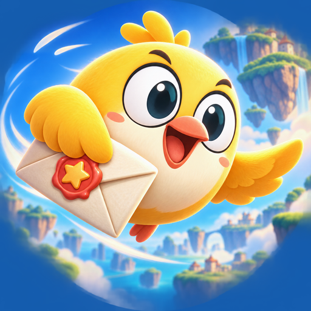
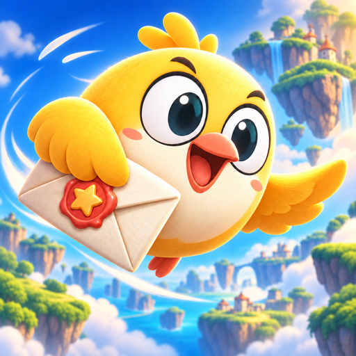

SPECIAL DELIVERY / CLEAN OUTER EDGES
Clean edges. All four corners.
The damaged perimeter is rebuilt as continuous sky and scenery, with a full-square background.
Selected for Beakbound. View the implemented game menu →

BEFORE

Before edge repair
The wing is corrected, but the generated outer edge contains artifacts.
CORRECTED


Special Delivery
Continuous scenery reaches every corner. The single folded wing still holds the envelope.
64 px48 px32 px